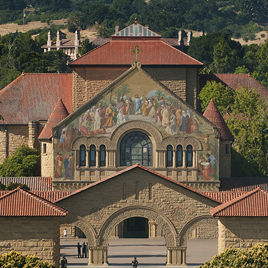
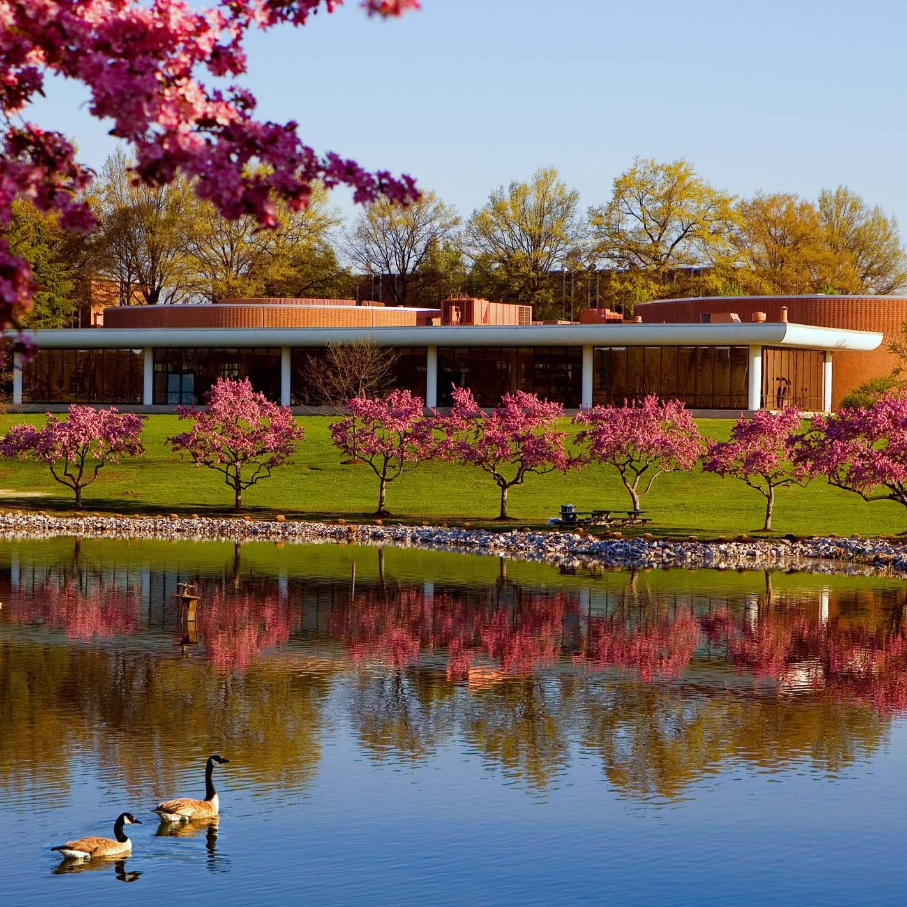

about me
|  |
I am advised by Prof. Krishna Shenoy in the Neural Prosthetic Systems Lab. Utilizing statistical signal processing, dynamical system theory, and machine learning, I study how the coordination of large populations of neurons give rise to movement. In tandem, I apply these insights to develop high-performance brain-machine interfaces. In addition to their translational utility, these neural prosthetics serve as yet another tool for studying basic motor neuroscience. |
|  |
Before coming to Stanford I was a research engineer at the Johns Hopkins University Applied Physics Laboratory, where I developed machine learning and computer vision algorithms for a variety of applications including robotics, medical image analysis, biophysical modeling, and remote sensing. |
|
I completed my undergraduate work at Johns Hopkins University, where I developed neural signal processing algorithms for studying Parkinson's disease and Epilepsy,as well as novel computer vision algorithms for medical robotics applications. |